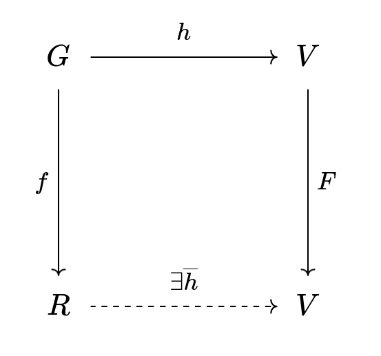

Induction and Recursion
What's the difference between induction and recursion? People tend to use the terms interchangeably, but this is a bit sloppy. There is a difference. Simply put, induction principles allow you to prove certain theorems and recursion principles allow you to construct objects in a certain way. The relation between the two is that for every set of recursively defined objects there is a corresponding induction principle for that set of objects which allows you to prove theorems about those objects inductively. In short, definitions by recursion allow for proofs by induction. I will explain what induction and recursion is in the usual setting of set theory. There is a categorical viewpoint of this from categorical logic, but I don't know enough to say much about this and it is likely less intuitive.
Recursion
The idea behind defining a set of objects recursively is to start with some initial collection of objects and then apply operations on them to build new objects from this initial set. The set of the recursively-defined objects will consist of only the initial objects and whatever you can build from a finite number of applications of the building operations. Let's say this a bit more formally.
We want to take some starting set \(U\) where all objects we talk about live. Our set of recursively defined objects \(R\) will be a subset of \(U\). Let \( G\subset U \) be some set which I'll call the 'generating set' (this is our initial collection) and a function \( f:U\rightarrow U \). Intuitively, \( f\) is an object-building function which allows you to build more complicated objects from the initial generating set \( G \). This can be generalized to more than one function of higher arities, but I think a single unary function suffices to explain the concepts. Now let \(R\) be the set of elements in \(U\) that can be obtained by a finite number of applications of \(f\) (closure of \(G\) under \(f\)). This general recursion is often called 'structural recursion' and there's the corresponding phrase for induction.
Example. A simple example of such a set is we can take \(U\) to be the set of all expressions in the language of propositional logic (PL), \( G \) to be the set of atomic propositions, and the function \(f\) to be the negation function which takes in an expression of PL and outputs the expression with a negation in front of it. For this example, \( R \) is the set of all propositions with some finite amount of negations (possibly 0). One can add more functions here such as AND, OR, and so on to make \( R \) the set of all well-formed formulas in propositional logic.
OK so now we have \( G \) which is our set of recursively defined objects. Suppose now that we want to define a function on our set of recursively defined objects \( G \) but in a way that takes advantage of the recursive definition of the objects. What I mean is that we want a function \(h:R\rightarrow R\) that is described by giving
- rules for computing \(h(x)\) for \(x\in G\)
- rules for computing \(h(f(x))\) in terms of \(h(x)\) .
This is a very nice and compact way of defining a function on a recursively-defined set of objects. It's a recursive definition of \(h\). Given this information, the hope is that this determines a unique function on \(R\). This definition of \(h\) would be no good if there were two different functions I could be talking about when I simply stated (1) and (2). Maybe even worse would be if this definition of \(h\) didn't define any function because the definition was inconsistent.
So when can we be sure that such a compact set of definitions determines a unique function \(h\) on \(R\)? This is the content of the Recursion theorem.
Recursion Theorem. Suppose that \(R\) is freely generated from \(G\) by \(f:U\rightarrow U\) and that \(h:G\rightarrow V\). Moreoever, suppose that \(F:V\rightarrow V\). Then \(h\) extends uniquely to a function \(h:R\rightarrow V\) such that
- \( \overline{h}(x)=h(x) \)
- \( \overline{h}(f(x))=F(h(x)) \),
or equivalently, such that the diagram below commutes.
Remark. \(F\) here corresponds to the rule for computing general outputs in terms of previously defined outputs (i.e. rule (2) as first described in the recursive definition of \(h\). Note that this would be function from \(V\) to \(V\).
The hypothesis of the theorem is that \(R\) be freely generated by \(f\). Let us define this.
Def. A set \(R\) is freely generated from \(G\) by \(f\) if \(f\restriction_G\) is injective.
Remark. If there are two object-building functions \(f\) and \(g\), then there is an additional hypothesis required being that the range of \(f\restriction_G\), the range of \(g\restriction_G\), and \(G\) are pairwsie disjoint.
Induction
Now that we have a recursively-defined objects. How do we prove things about these recursively-defined objects in a way that takes advantage of their recursive definition? The answer is that we use induction principles.
What we would hope for is that if by generating set has a property \(P\) and the property is preserved under by object-building operations, then my entire collection of objects should satisfy the property \(P\). Fortunately, this is the case.
Induction Principle. Suppose that \(R\) is freely generated from \(G\). Furthermore, suppose that for some property \(P\) we have that
- \(\forall g\in G\ P(g)\)
- \(\forall r\in R\ (P(r)\rightarrow P(f(r)) \) ,
then \(\forall r\in R,\ P(r)\).
Remark. The induction principle on the natural numbers is simply the special case when you take \(G=\{0\} \) and \(f=\text{successor}\).
Applications of Ordinary Recursion and Induction
- defining the set of wffs for any formal language (e.g. PL, FOL, SOL, \(\lambda\rightarrow\) )
- defining the satisfaction relation \(\vDash\) in model theory
- defining homomorphisms on groups by defining them on them on the generators of the groups
Transfinitely
You might have heard of transfinite induction and recursion and wondered how it relates to ordinary cases of induction and recursion. Conceptually, they are the same. What is different is the length of the induction and recursion. Ordinary induction (recursion) are of length \(\omega\). Transfinite induction (recursion) extends this to arbitrary ordinal lengths.
Transfinite Recursion Theorem for Ord. For each formula \(\psi(\alpha)\), if \(\psi(\alpha)\) holds for some ordinal \(\alpha\), then there is a least ordinal \(\xi\) such that \(\xi\).
Transfinite Induction on Ord. For each formula \(\psi(\alpha)\), if \(\psi(\alpha)\) holds for some ordinal \(\alpha\), then there is a least ordinal \(\xi\) such that \(\xi\).
Remark. A few words about the proof theory of these principles: as might be inferred, the axioms of Peano Arithmetic (minus the induction schema) cannot prove the instances of the induction schema and so we take the instances as axioms. On the other hand, the transfinite induction principle (and recursion theorem) is a theorem of ZFC.
Remark. At least in the context of set theory, full generality is achieved by considering induction (recursion) on an abitrary set of objects endowed with a well-founded relation. The case of transfinite induction (recursion) is the case when the relation is the usual ordering relation on the ordinals.
References
A Mathematical Introduction to Logic (2001), Herbert B. Enderton